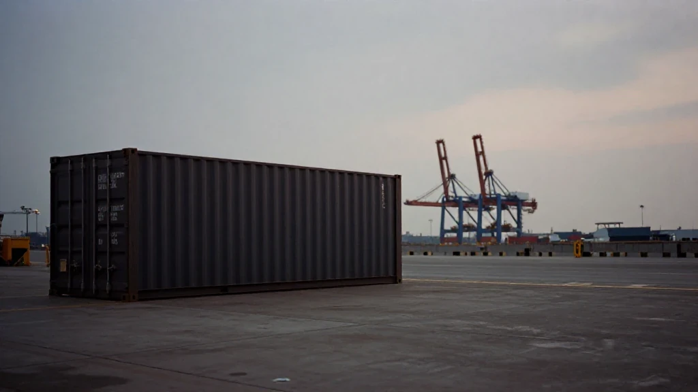
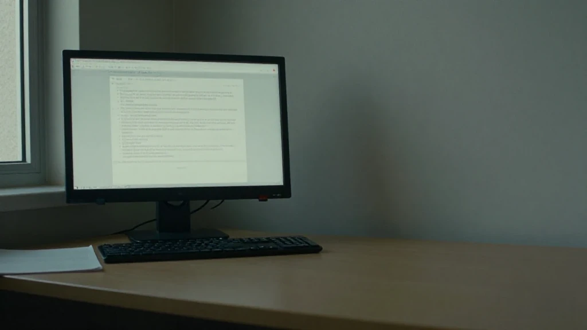

圖片由 AI輔助創作（Z-Image-Turbo）Image by AI (Z-Image-Turbo)
【鄭哥點評】
呢排同幾個做算力硬件外銷嘅行家傾開，發現大家久唔久都會撞到同一款問題：貨有人要，錢有人畀，但個結構一擺上枱，就知過唔到關。
我唔知具體係邊一單，亦唔打算講任何一單。但呢個結構值得公開講清楚，因為「市場上會有買家提出呢類安排」呢件事，喺外銷算力硬件嘅圈子入面唔罕見。市場上會有買家提出三條路：唔走美元電匯，改用穩定幣；或者喺香港收現金；再唔得，就由第三國公司出面包簽約、包付款。三條路聽落都係付款問題，好似換個方式就通。我嘅判斷係：三條路最後撞嘅係同一堵牆，而嗰堵牆同付款方式冇關。
第一幕：三條路擺上枱，全部繞開同一個動作

圖片由 AI輔助創作（Z-Image-Turbo）Image by AI (Z-Image-Turbo)
三條路有一個共通點：全部避開「講清楚最終用戶係邊個」呢個動作。
買家通常願意提供公司註冊文件、董事資料、對公銀行資料，甚至願意飛過嚟簽約。但一問到批貨最終入邊個機房、邊個實體真正使用，答案就開始含糊：有時話「客戶自己安排」，有時話「商業安排」，有時話「你唔需要知」。呢個含糊，才係整件事嘅核心，唔係付款幣種。
我做外貿同算力交付咁多年，明白有啲客人真係唔方便披露商業細節。但「唔方便講商業細節」同「唔肯講邊個用」係兩句話。前者可以傾，後者冇得傾。
第二幕：USDT——錢嚟得到，來源嚟唔到
圖片由 AI輔助創作（Z-Image-Turbo）Image by AI (Z-Image-Turbo)
穩定幣最吸引買家嘅地方，係即時、無國界、唔經銀行。呢三樣同時亦係賣方最唔應該接受嘅三樣。
第一，鏈上嚟嘅錢冇來源證明。筆錢轉到你手之前可能已經轉過好幾手，其中一手係詐騙或者賭博資金，你用嚟兌換嘅賬戶就會被凍結，跟住係調查。第二，交易不可逆。貨交咗，對方否認、失聯、或者臨時加條件，你冇任何合規渠道追。銀行匯款至少留低一張紙、一個對手方、一條查得到嘅路徑。
第三，制度上根本冇位擺。內地主體唔可以接收 USDT 作為貿易貨款；就算用香港公司收，經常性以虛擬資產收取貿易對價，需要 VASP 牌照，門檻好高；而內地居住嘅人亦唔可以直接開呢類賬戶。所以呢條路唔係「風險高」，係根本冇合法落腳點。
第三幕：現金——換咗張紙，換唔走交易對手
圖片由 AI輔助創作（Z-Image-Turbo）Image by AI (Z-Image-Turbo)
有買家會退一步：唔用幣，喺香港收美元現金，一手交錢一手交貨。呢個方案我直接講：唔成立。理由三個，第三個最致命。
香港對大額現金貿易收款有反洗錢要求，收款方要做客戶 KYC。對方畀唔到身份證件，你就核實唔到資金來源，等於自己將一筆無法解釋嘅現金收入放上公司盤數。銀行嗰邊一樣：大額現金存入對公賬戶，銀行會要求完整業務單據，缺客戶身份資料就直接拒收，甚至關閉賬戶。
最致命係第三點：OFAC 睇嘅係交易對手，唔係付款工具。你手上揸住現金，唔會令一個受制裁嘅實際買家或者最終用戶變成唔受制裁；次級制裁風險一模一樣。現金只會令你日後更難證明自己唔知情。
第四幕：第三國主體——穿透審查問嘅係最終用戶
圖片由 AI輔助創作（Z-Image-Turbo）Image by AI (Z-Image-Turbo)
第三條路最似「專業方案」：由第三國公司簽約，用呢間公司嘅賬戶走美元 SWIFT，貨運去第三地。買家會話，合約上嘅買方唔係受制裁方，風險已經隔離咗。
呢個理解係錯嘅。OFAC 係穿透式審查：名義買家只係起點，佢會追實際控制人，再追到最終使用人。換一個國家嘅合約外殼，唔會令曝光消失，只會令「你知唔知」變成一個更難答嘅問題。
一個真正合規嘅結構，技術上要同時滿足幾件事：第一，簽約公司要有完整註冊文件、董事資料同對公銀行資料，錢由佢自己個戶口直匯；第二，買方要完整披露最終用戶同用途，並由賣方獨立核查簽約公司、實際控制人、最終使用人全部唔喺制裁名單；第三，簽約公司本身要有真實嘅伺服器相關貿易業務；第四，三流要一致——簽約主體、付款主體、收貨主體對得上，合同、交付憑證、銀行流水全部留檔。
四項之中，第三項係死穴。呢類結構之所以出現，通常就係因為簽約公司本身冇相關業務、冇人員、冇往來記錄，只係一個為咗繞制裁而設嘅通道。你一查佢營業背景、查佢過去賣過乜、查佢有冇能力消化呢批貨，個殼就現形。第一、二、四項係文件同流程，文件可以補；第三項係歷史，歷史補唔到。
所以我嘅結論唔係「呢個結構難做」，係「呢個結構做唔成」。而一個主動提出呢條路、同時唔肯講最終用戶係邊個嘅買家，本身就係全份文件入面最清楚嘅紅旗——唔係一個要你去解決嘅問題，係一個要你走嘅訊號。
第五幕：真正嘅門檻係三流一致同出口管制
圖片由 AI輔助創作（Z-Image-Turbo）Image by AI (Z-Image-Turbo)
拋開制裁唔講，就算對手方完全乾淨，賣方仲有兩件事要做。
第一件係三流一致。簽約主體、付款主體、收貨主體如果對唔上——合約係甲公司，錢由乙公司匯，貨送去丙公司倉——你要有一個合理嘅商業解釋同完整文件支撐。做唔到，銀行第一個問你，稅務第二個問你。全套合同、交付憑證、銀行流水留存歸檔，係最低要求，唔係加分項。
第二件係出口管制。先進算力硬件屬於受管制物項，報價之前就要查清楚需唔需要許可，唔係收咗訂金再算。次序錯咗，之後全部係補救，而補救通常救唔返。
我嘅總結好簡單：呢類訂單嘅 binding constraint 從來唔係付款方式，係 KYC 同制裁篩查。對手方如果連自己係邊個都唔肯講清楚，呢張單唔存在「值唔值得做」，只有「幾時出事」。大額訂單，請合規顧問做一次交易風險評估，資料留齊，係最平嘅保險。
付款方式可以換，交易對手換唔到。
圖片由 AI輔助創作（Z-Image-Turbo）Image by AI (Z-Image-Turbo)
[Zheng Ge's Take]
Lately I have been comparing notes with a few people who sell compute hardware overseas, and the same problem keeps turning up: the goods are wanted, the money is offered, and then the structure lands on the table and you can see at a glance that it will not clear.
I do not know which particular deal any of this comes from, and I am not going to describe one. But the structure is worth setting out plainly, because a buyer turning up with an arrangement of this kind is not rare in the overseas compute-hardware trade. A buyer will offer three routes: skip the dollar wire and use a stablecoin; or take cash in Hong Kong; and if neither of those works, have a third-country company sign the contract and make the payment. All three sound like payment problems, as though changing the method would open the road. My judgement is that all three hit the same wall, and that wall has nothing to do with how the money moves.
Act One: Three Routes on the Table, One Step All of Them Skip
圖片由 AI輔助創作（Z-Image-Turbo）Image by AI (Z-Image-Turbo)
All three routes share one feature: each of them avoids the step of saying clearly who the end user is.
The buyer will usually hand over incorporation documents, director records and corporate bank details, and will even fly in to sign. But the moment the question becomes which data centre the goods end up in, and which entity actually operates them, the answers go vague. Sometimes it is that the client will arrange it; sometimes it is a commercial arrangement; sometimes it is that you do not need to know. That vagueness is the whole story, not the currency.
After years in export trade and compute delivery, I accept that some customers genuinely cannot disclose commercial detail. But "I would rather not discuss the commercial detail" and "I will not say who uses it" are two different sentences. The first can be worked with. The second cannot.
Act Two: USDT — the Money Arrives, Its Origin Does Not
圖片由 AI輔助創作（Z-Image-Turbo）Image by AI (Z-Image-Turbo)
What attracts a buyer to a stablecoin is that it is instant, borderless and never touches a bank. Those are precisely the three features that should stop a seller taking it.
First, money arriving on-chain carries no provenance. Before a transfer reaches you it may have passed through many hands, one of them fraud or gambling money, and the account you use to convert it gets frozen, followed by an investigation. Second, the transaction is irreversible. Once the goods have gone, if the counterparty denies the deal, disappears, or adds a condition at the last minute, there is no lawful route to recover anything. A bank transfer at least leaves a document, a named counterparty and a path that can be traced.
Third, there is no lawful place to put it. A mainland entity cannot take USDT as payment for goods. Even through a Hong Kong company, taking virtual assets as trade consideration on a habitual basis requires a VASP licence, which is a high bar, and mainland residents cannot open that kind of account directly. So this is not a high-risk route. It is a route with no lawful landing place at all.
Act Three: Cash — You Change the Paper, Not the Counterparty
圖片由 AI輔助創作（Z-Image-Turbo）Image by AI (Z-Image-Turbo)
Some buyers then step back from coin: no crypto, just US dollars in cash, handed over in Hong Kong, money against goods. I will say it directly. That does not stand up. Three reasons, and the third is fatal.
Hong Kong's anti-money-laundering rules require KYC on large cash receipts in trade. If the counterparty cannot produce identity documents, you cannot verify the source of funds, which means walking an unexplained cash receipt onto your own company's books. The bank is the same story from the other side: pay a large cash sum into a corporate account and it will ask for full business documentation; without client identity papers it will refuse the deposit, and it may close the account.
The third point is the fatal one: OFAC looks at the counterparty, not at the payment instrument. Cash in your hand does not turn a sanctioned actual buyer or end user into an unsanctioned one; the secondary-sanctions exposure is identical. All cash does is make it harder, later on, to show that you did not know.
Act Four: The Third-Country Entity — Look-Through Asks About the End User
圖片由 AI輔助創作（Z-Image-Turbo）Image by AI (Z-Image-Turbo)
The third route looks the most professional: a third-country company signs, that company's own account sends the dollars by SWIFT, and the goods move to a third destination. The buyer will tell you the contracting party is not a sanctioned party, so the risk has already been isolated.
That reading is wrong. OFAC's review looks through: the nominal buyer is only the starting point, and the review follows the actual controller down to the end user. Changing the country of the contracting shell does not make the exposure disappear; it only makes "did you know" a harder question to answer.
A genuinely compliant structure would have to satisfy several things at once. One, the signing company must supply full incorporation documents, director records and corporate bank details, and the money must come out of that company's own account by wire. Two, the buyer must disclose the end user and the end use in full, and the seller must independently verify that the signing company, its actual controller and the end user are all off the sanctions lists. Three, the signing company must itself have a real trading business in servers. Four, the three flows must be consistent — contracting party, paying party and receiving party all matching, with contracts, delivery evidence and bank records retained.
Of those four, the third is where the structure dies. Arrangements like this appear in the first place usually because the signing company has no such business, no staff and no trading history, and exists only as a channel around sanctions. The moment you check what it has actually traded, what it has sold, whether it has the capability to absorb goods of this kind, the shell shows itself. Items one, two and four are paperwork and process, and paperwork can be produced. Item three is history, and history cannot be produced.
So my conclusion is not that this structure is difficult. It is that it does not work. And a counterparty who puts the route forward while declining to name the end user is himself the clearest red flag in the file — not a problem for you to solve, but a signal for you to walk.
Act Five: The Real Threshold Is Three-Flow Consistency and Export Control
圖片由 AI輔助創作（Z-Image-Turbo）Image by AI (Z-Image-Turbo)
Set sanctions aside entirely. Even with a completely clean counterparty, a seller still has two jobs to do.
The first is three-flow consistency. If the contracting party, the paying party and the receiving party do not line up — the contract with company A, the money wired by company B, the goods delivered to C's warehouse — you need a coherent commercial explanation and complete documentation behind it. Without that, the bank asks first and the tax authority asks second. Keeping the full set of contracts, delivery evidence and bank records on file is the floor, not a bonus.
The second is export control. Advanced compute hardware is a controlled item. You check whether a licence is required before you quote, not after the deposit has landed. Get that order wrong and everything afterwards is damage control, and damage control rarely saves the deal.
My summary is short. On this kind of order the binding constraint was never the payment method. It is KYC and sanctions screening. If a counterparty will not say clearly who it is, then the question is not whether the deal is worth having; it is when it goes wrong. On a large order, paying a compliance adviser for a transaction risk review and keeping the paperwork complete is the cheapest insurance available.
Payment methods can be changed. Counterparties cannot.